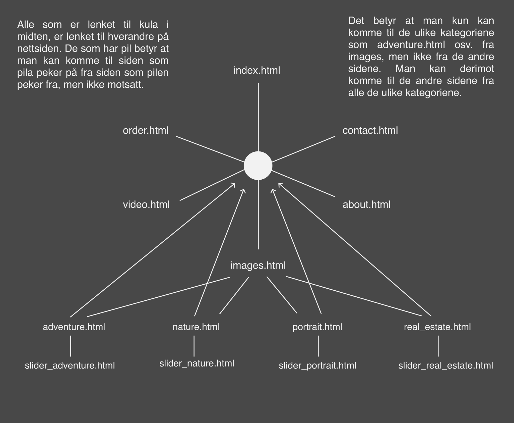
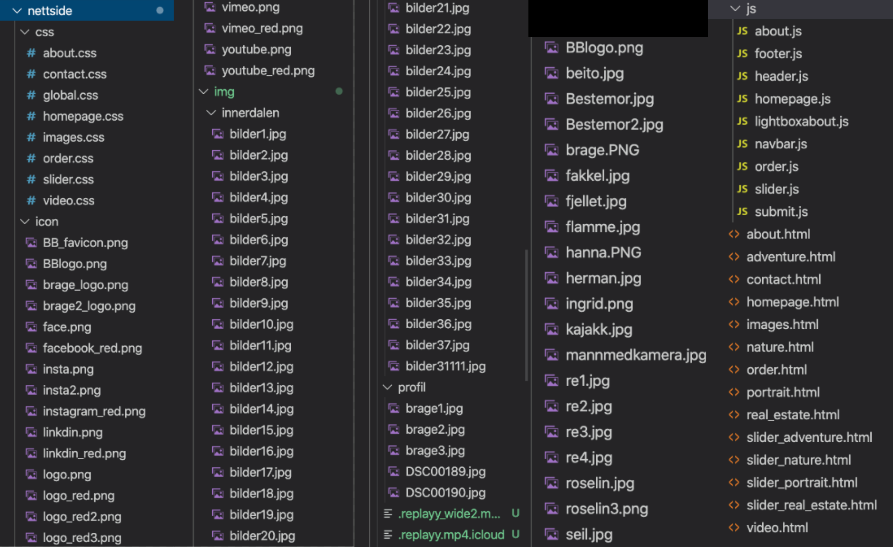
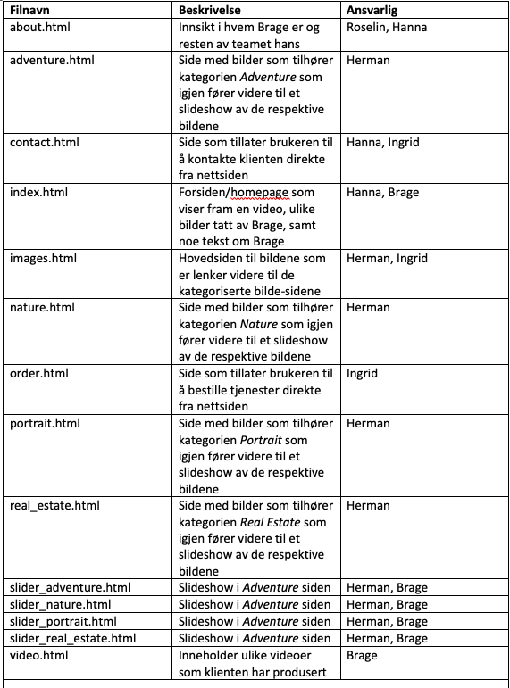
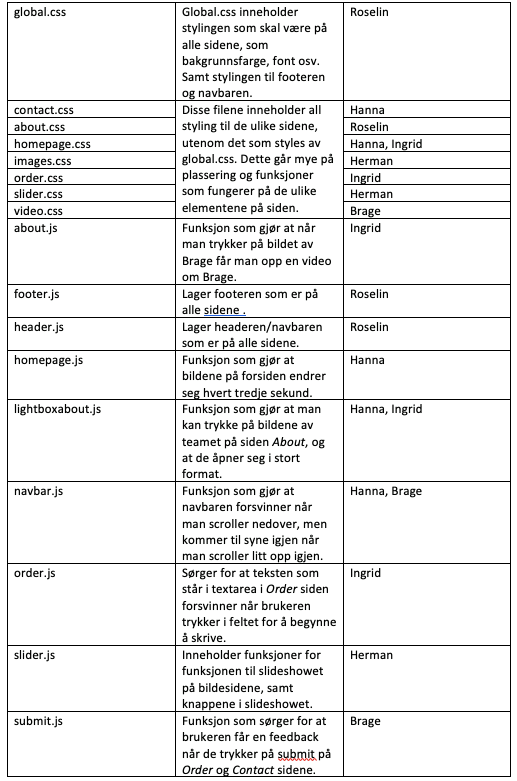
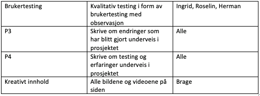

Klientens navn, navn på nettsiden og kontakpersonen er Brage Bakke.
Lenke til nettside:
http://folk.ntnu.no/hanmo/Nettside/homepage.html
Vi har i all hovedsak beholdt veldig mange av elementene slik det var tenkt i P2.
Den generelle layouten og strukturen er veldig lik, men noen endringer er gjort slik de er beskrevet under.
Når det kommer til designet så har vi i all hovedsak samarbeidet i svært stor grad om hvordan ting skal se ut.
Det viktigste å spesifisere her er at det er Herman som har stått for å lage logoen, og Roselin som har stått for å lage ikonene i footeren.
Submit knappene som er å finne på Order- og Contact-sidene er laget av Hanna.
Ellers så er utformingen av nettsiden gjort sammen.
I utgangspunktet planla vi å ha seks html-er, men med tanke på at Images-fanen nå leder inn til nye sider med kategoriserte bilder som igjen leder til slideshow av de respektive bildene,
har vi utvidet til 14-html sider.
Endringer i navigasjonsstruktur

Opprinnelig så vi for oss at nettsiden bestod av de fem hovedkategoriene + hjemmesiden.
Det var tenkt at alle disse kunne nås uavhengig av hvor på siden man befant seg, altså som en klick.
Denne strukturen har vi valgt å utvide slik at det nå også finnes fire individuelle bildekategorier som leder videre inn til hvert sitt slideshow.
Dette gjør at om man befinner seg inne på slideshowene kan man ikke navigere seg til de andre sidene på nettsiden, men bare trykke seg tilbake på kategorien man opprinnelig var på.
Nettsiden fungerer dermed ikke lenger som en klick med disse sidene implementert, men utenom dette er strukturen lik slik det var beskrevet i P2.
Enringer gjort globalt
Det er enkelte ting som går igjen på nettsiden, og disse elementene har vi valgt å gjøre lett tilgjengelige for oss ved å lage universelle koder som gjenbrukes.
Dette gjelder da global css, som inneholder alt av css-kode som går igjen på alle sidene.
Dette innebærer altså stylingen av farger som er felles, navbar og footer.
Sider som bruker bilder er koblet opp mot images.css, som gir et helhetlig uttrykk gjennom nettsiden.
Endringer i header.js - Navbar
I utgangspunktet hadde vi tenkt å ha en navbar med elementene Images, Videos, Order, About og Contact.
Det var tenkt at om man hovret over Images og Videos så skulle det dukke opp en subnav-meny med kategoriene Events, Nature/Adventure, Portraits, Promo og Real Estate.
I tillegg så vi for oss at når man trykket seg inn på Images fanen så skulle man komme seg inn på en ny side bestående av bilder med tekst over seg slik at man lett forstår hvilke kategorier siden har å by på.
Den første endringen her var at vi konkluderte med å kutte ned på antall kategorier da det viste seg at tilbudet av disse fra klienten ikke var stort nok til at det føltes nødvendig å ha med.
Da vi fikk alt innholdet fra klienten vår så vi at det ikke var nødvendig med underkategoriene Promo og Events.
Vi så derimot at Brage Bakke tar mange natur- og turbilder, og vi bestemte oss derfor sammen med han for å dele opp Nature/Adventure i to separate kategorier.
Dermed strippet vi det ned til 4 hovedkategorier: Nature, Adventure, Portraits og Real Estate.
I tillegg fant vi også ut av at det ikke var noe behov for å kategorisere Videos ettersom antallet videoer som klienten vår hadde ikke var mange nok til dette for tiden.
Videre fant vi ut av at det føltes overflødig å ha kategoriene både inne på Images og i en egen subnav-meny.
Dette kommer av at innholdet i seg selv er relativt enkelt da det kun består av enkeltstående bilder, og antall klikk ble like mange om man så måtte gjennom en subnav eller gå rett inn på Images.
Med dette i mente avgjorde vi at vi kun ønsket å beholde en av metodene da å ha begge ble smør på flesk, og endte opp med å forkaste subnaven til fordel for et enkelt oversiktlig klikk på Images.
Endringer i footer.js - Footer
I footeren valgte vi å kun ha “sosiale medier”, og tok derfor bort mail-ikonet.
Vi følte dette var overflødig da det er en egen side i navbaren hvor man kan kontakte Brage gjennom mail.
Ettersom klienten er synlig på sosiale medier ble det viktigere for han å fronte dette godt slik at brukerne får muligheten til å lett danne seg et bilde av han, ikke bare gjennom nettsiden, men også på et mer personlig plan.
Dette ønsket han skulle være lett tilgjengelig og synlig for brukerne av nettsiden til alle tider, og den er derfor plassert nederst på alle sider.
Ikonene i footeren er nå lenker til hans Instagram-, LinkedIn-, Facebook-, YouTube- og Vimeo- profil.
Endringer med logo og font
Vi hadde til å begynne med en logo uten tekst.
For å “brande” Brage ytterligere la vi til “BRAGE BAKKE” ved siden av logoen for at brukerne skulle få en tilknytning til både ikon og navn til samme tid.
Dette er vist i eksemplene i P2.
Videre følte vi at teksten tok litt for mye oppmerksomhet, men hadde fortsatt et ønske om å integrere det på en mer subtil måte.
Resultatet ble derfor den samme logoen men denne gangen med navnet hans plassert i mindre skrift under ikonet.
Logoen uten tekst tok vi heller i bruk som favicon til siden, bare i den røde fargen som går igjen som en rød tråd på nettsiden.
Opprinnelig hadde vi sett for oss å bruke Acumin pro som fonten på nettsiden.
Dette gikk vi bort ifra og valgte heller å bruke font-family Helvetica.
Dette kommer av at dette er en mer anerkjent font som alle på en eller annen måte har vært borti før.
I tillegg så fant vi ut av at de fleste bedrifter holder seg til den samme fonten, og den har med dette blitt assosiert med bedriftskultur og virksomhet, noe vi ønsket at vår klient også skal bli assosiert med.
Endringer i index.html - Homepage
På hjemmesiden har vi endret litt på rekkefølgen av de ulike elementene.
Etter en prat med klienten vår fant vi ut at det var viktig for han å få vist fram videosnutten, samt å fortelle litt om hva som er hensikten med nettsiden.
Vi bestemte oss derfor for å legge videoen øverst på siden, etterfulgt av et lite avsnitt om hensikten med nettsiden.
Vi syntes dette også ga et renere uttrykk, samtidig som ble en spennende forside å komme til fordi videoen spilles av med en gang man kommer inn på siden.
Ved å legge til et lite avsnitt om Brage og nettsiden på forsiden vil brukeren med en gang skjønne hva nettsiden handler om.
Bildegriden med de fire bildene kommer derfor litt lengre ned på siden.
Disse endres med et intervall på tre sekunder slik som planlagt, men funksjonen med å hovre over valgte vi å ta bort.
Vi merket fort at det ble litt for mye som skjedde når bildene endret seg hvert tredje sekund, samtidig som man kunne hovre over og klikke for å komme inn på ny side.
Det ble rotete og uoversiktlig, og vi følte også at det ble litt overflødig fordi om man vil se flere bilder kan man enkelt gå i Images- siden i navbaren.
Endringer i about.html - About
Innholdet i About- siden er den samme som det var beskrevet i P2.
Endringene i layouten er tilnærmet lik planen, med noen få forskjeller.
Overskriften "TEAM" var opprinnelig venstrestilt på siden, men vi valgte heller å sentrere overskriften på siden da det føltes mer helhetlig ut.
Vi har i tillegg valgt å droppe "spill av"-ikonet som skulle være over bildet av Brage, og heller skrevet en setning om det ved siden av.
Når brukeren hovrer over bildene vil de bli mørkere slik at man lettere forstår at de kan trykkes på.
Bildet av klienten vår er også erstattet med et mer profesjonelt bilde.
Opprettelse av lightboxabout.js:
Vi lagde en egen javascript-fil som gjør at når man trykker på bildene på denne siden så vil større versjoner av det samme bildet dukke opp på skjermen, slik det ble beskrevet i P2.
Opprettelse av about.js:
Denne javascripten-filen gjør at om man trykker på bildet av Brage så dukker videoen av han opp.
Endringer i about.css:
Vi valgte å lage en grid på denne siden.
Dette var for å gjøre det lettere å plassere bilder og tekst på nettsiden, i tillegg til å gjøre det lettere for oss når vi skulle sørge for at siden var responsiv.
Endringer i contact.html - Contact
Contact- siden er tilsynelatende identisk med planen vi laget.
Utover planen er det kun js-funksjonen som gir en bekreftelse på mottatt utfylling av skjema som er annerledes.
Endringer i images.html - Images
Istedenfor å komme inn på bildekategori-sidene gjennom en subnav under Images i toppmenyen, får man heller opp kategoriene når man hovrer over bildene.
Hvert bilde er ordnet slik at når man hovrer over det, vil man se et av kategori-ordene Adventure, Nature, Portrait eller Real Estate.
Samtidig fremheves bildet med en zoom-effekt, samt en mørkhet som gjør den hvite teksten tydelig.
Cursoren blir en pointer slik at det er tydelig at man kan klikke seg videre inn på bildet, og dermed komme til den spesifikke kategoriens side.
På kategori-sidene fins den samme effekten på hvert bilde, bare uten tekst.
Klikker man igjen på et av bildene på kategori-siden, får man opp et responsivt fullskjerm-slideshow med mulighet til å bla gjennom bilder av høy kvalitet.
Man kan bla begge veier, hele veien rundt og krysse seg ut for å komme tilbake til kategori-siden.
Knappene her (piler til høyre og venstre og en exit-knapp) er delvis gjennomsiktige slik at man kan se det som er bak dem også.
Brukeren får dermed en optimal visuell opplevelse av Brages bilder.
Opprettelse av images.css:
Denne setter opp en grid til alle bilde-sidene, og gir muligheten til å bestemme bildenes størrelse i gridet.
Opprettelse av slider.css:
Denne styler og linker til bildene til de fire slideshowene, som inkluderer responsiv fullskjerm-visning og knappenes utseende.
Opprettelsen av slider.js:
Denne lager funksjonene på slideshowene, som inkluderer pil-knapper for å navigere gjennom bildene, og exit-knappen for å gå ut av slideshowet.
Endringer i videos.html - Videos
På Videos-siden er alle videoer samlet på èn side, heller enn at brukeren havner i en valgt kategori.
Videoene ligger som planlagt fortsatt under hverandre, men i Vimeo-format.
Her har man mulighet til å like, lagre til senere og dele videoen med ett tastetrykk, samt spille av i fullskjerm-modus, velge oppløsning og klikke seg videre inn på Vimeo-profilen til Brage.
Man har også friheten til å la være å gå inn på Vimeo hvis man heller vil bli værende på Brage Bakkes nettside og se videoene direkte herfra.
Tittel og en liten tekst om hver video er også lagt til i nettsidens stil.
Det er også lagt til streker mellom videoene for å skape en mer ryddig og oversiktlig layout på siden.
Det har blitt en del endringer av minimumskravene.
Av opprinnelig plan er det nr. 1 (bildene på homepage skiftes med et intervall, homepage.js, utført av Hanna), nr. 4 (bildene av teamet på about-siden forstørres ved klikk, lightbox.js, utført av Hanna og Ingrid) og nr. 5 (image gallery, -preview av kommende bilder, slider.js, utført av Herman) som er med.
Vi valgte å gå vekk fra subnav-menyen (nr. 2), da denne føltes overflødig med tanke på at vi hadde linker til kategoriene på alle bildene på Images-siden.
Vi følte også at nr. 3 (cascading dropdown-meny) ble overflødig da en sjelden velger veldig store tall.
Likevel ble det mange nye js-elementer, disse har vi lagt inn for å optimalisere funksjonene på nettsiden.

Filstrukturen har gått gjennom en ganske omfattende oppdatering, men den er fortsatt ryddig og enkel å finne frem i.
Video-mappen er nå borte, da vi heller valgte å bruke "iframe" for å bruke Vimeo sin avspiller direkte i html-sidene.


